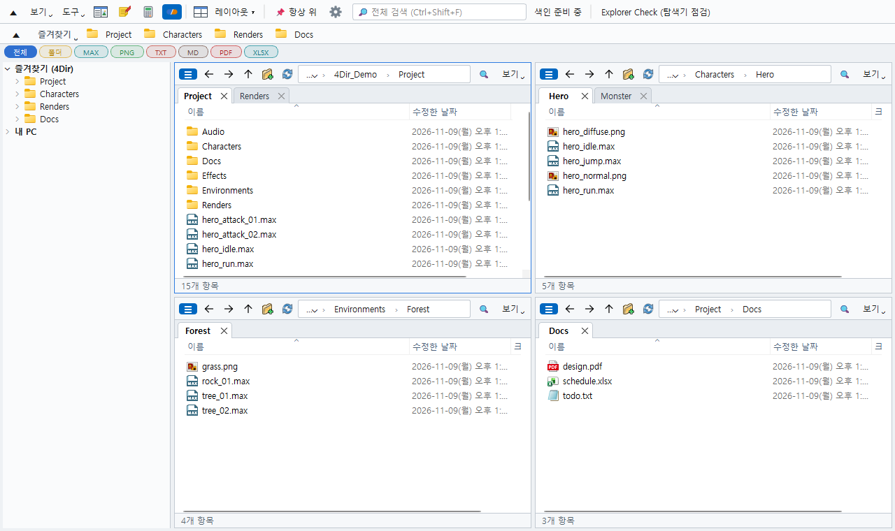
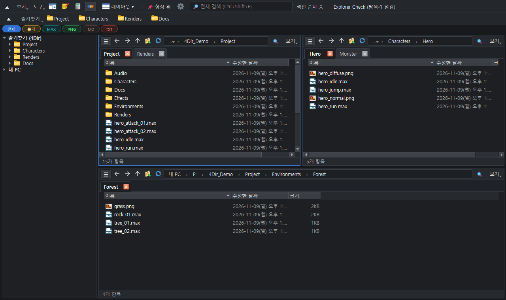

윈도우 탐색기보다 빠른 멀티 탐색기!!
윈도우 10/11용 무료 파일 관리자. 설치 없이 압축만 풀고 실행.
윈도우 10/11 64비트 · 47 MB · 2026-11-06 · 무료
4Dir 후원하기
4Dir 는 무료이고 광고가 없습니다. 시간을 아껴 드렸다면 작은 후원이 다음 업데이트의 힘이 됩니다.
v0.9.108 에서 바뀐 점
- 동영상 미리보기: 미리보기 창에서 동영상이 재생되고 GIF 처럼 한 장면씩 움직입니다(|◀ ▶|, ← →, 스페이스 재생/멈춤). 장면 막대·장면 띠, 지금/전체 시각·fps, 소리(끄기 단추), 자동 재생 켜기/끄기. 휴대폰(갤럭시·아이폰·카메라)이 내 PC 에 보이고, 열어서 파일을 복사·끌어 놓기·붙여넣기·이름 바꾸기·삭제합니다. 위쪽 단추로 형식 단추 줄을 모든 칸에서 켜고 끕니다.
- 압축 파일을 폴더처럼: ZIP·7Z·RAR·TAR 를 두 번 누르면 4Dir 안에서 봅니다(읽기 전용) — 열기·복사·끌기·F6 로 꺼냅니다. 복사 대기열: 복사·이동이 하나씩 차례로 — ⏳ 단추에서 기다리는 것을 취소·멈춤. 하위 폴더 펼쳐 보기: 폴더 아래 모든 파일을 한 목록으로(빈 곳 우클릭·도구). 중복 파일 찾기: 이름이 달라도 내용이 같은 파일 — 묶음마다 하나만 남기고 휴지통으로. 스페이스로 미리보기 창을 열고 닫습니다.
- 미리보기 창: 메모 창처럼 따로 창으로 열려 칸 크기가 바뀌지 않고, 자리·크기를 기억하며 항상 위에 둘 수 있습니다(우클릭). GIF 장면은 |◀ 이전 · ▶ 재생/⏸ 멈춤 · ■ 정지 · ▶| 다음 단추와, 끌어서 넘기는 장면 띠로. 목록 위 형식 단추는 작아지고 형식마다 색이 있으며 글자가 잘리지 않습니다 — 안 들어가는 것은 +N ▾ 로. 메모 그림은 정한 크기 그대로: 그림을 누르고 모서리 손잡이를 끌어 조절합니다.
- 메모 창: 📝 버튼(또는 Alt+M, 도구 ▸ 메모 창)으로 메모를 따로 창에 엽니다. 칸 크기가 바뀌지 않고, 작업 표시줄에 나오며 항상 위에 둘 수 있습니다. 색 메모지에 체크박스(줄 앞 '[] ')·글머리('- ')·굵게·기울임·밑줄·취소선·글자 색·크기, 체크 진행(3/5) 표시. 머리를 끌어 순서 바꾸기, 두 번 눌러 접기, 맨 위 고정, 글자·색으로 거르기. 웹 주소·폴더/파일 경로는 Ctrl+클릭으로 열고, 파일·폴더를 끌어 넣으면 링크, 그림도 붙여넣기 됩니다. 폴더에 붙인 메모는 그 폴더에 들어가면 알려 주고, 알림 시각을 정하면 그때 메모 창이 뜹니다. 지운 메모는 휴지통에서 되살릴 수 있습니다. 모든 창이 같은 메모를 쓰고 자동 저장됩니다. 표·번호 목록('1. ')·정렬·자간·글꼴·'− 크기 +'·그림 넣기 단추도 있고, 링크는 파란 글자로 보입니다.
- 그림·형식: 목록 위 형식 단추 줄([전체][폴더][JPG][PSD]…)을 누르면 그 형식만 보입니다(Ctrl+누르기 = 여러 개). 자세히 보기에서 형식별로 묶기(폴더·JPG·PNG…). 아이콘 보기에서 그림 미리보기에 형식 딱지(PSD·PNG·GIF…), 폴더에는 안에 든 첫 그림이 표지로 보입니다. 미리보기 창에서 GIF 장면 조작(이전·다음 장면, 장면 막대·장면 띠, 장면 번호·간격, 지금 장면 PNG 저장)과, 윈도우가 미리보기를 주는 문서·영상은 첫 장면을 크게 보여 줍니다.
- 풍선 도움말: 모든 단추와 메뉴에 마우스를 올리면 짧은 설명이 나옵니다. 설정 ▸ 일반에서 끌 수 있습니다.

기능
최대 20칸
1·2·3·4·6칸을 버튼 하나로, 또는 가로 5 × 세로 4까지 원하는 대로. 칸마다 탭이 따로 있습니다.
PC를 무겁게 하지 않음
무거운 윈도우 탐색기 화면을 쓰지 않고 폴더를 직접 읽습니다. 쉬고 있을 때는 아무것도 하지 않아 3ds Max·게임 같은 무거운 프로그램 옆에 켜 둬도 안전합니다.
바로 찾는 검색
입력하는 즉시 드라이브의 모든 파일 이름을 찾습니다. 자체 목록이 실시간으로 갱신되고 관리자 권한이 필요 없습니다.
SVN 상태 한눈에
.svn 을 직접 읽어 수정·추가·충돌 표시. 안쪽이 바뀐 폴더는 빨갛게. Git·Perforce 는 윈도우 겹침 아이콘으로.
탐색기와 같은 손맛
같은 단축키, 윈도우 우클릭 메뉴 그대로, 탐색기·다른 프로그램과 끌어다 놓기. webp 그림은 우클릭 한 번으로 PNG·JPG로 저장.
휴대용·개인정보 보호
설정은 4Dir 폴더 안에만. 밝게/어둡게, 10개 언어, 이름 일괄 변경, 창 구성 복구, 탐색기 점검 기본 포함.

설치 방법
- 위 버튼(또는 깃허브 Releases)에서 zip 을 받습니다. 깃허브의 초록색 'Code → Download ZIP' 은 소스 코드만 있어 실행되지 않습니다.
- 압축 파일 우클릭 → 속성 → 차단 해제 체크 → 확인. (안 하면 실행할 때마다 보안 경고가 뜹니다)
- 아무 곳에나 압축을 풀고 4Dir.exe 를 더블클릭. (막히면 4Dir.vbs)
윈도우 보안(SmartScreen) 창이 뜨면 추가 정보 → 실행.
정품 확인 (선택)
명령 프롬프트에서 certutil -hashfile 4Dir_v0.9.108.zip SHA256 결과가 아래와 같으면 정품입니다:
e5fe1394569211793f93f935860c93bbd52ddf631d4b168d8fb48f3439c0c8eb
자주 묻는 질문
정말 무료인가요?
네. 무료 오픈소스(GPL-3.0)입니다. 광고·회원가입·체험 기간 없습니다.
회사에서 써도 되나요?
네. GPL-3.0 무료 소프트웨어라 회사에서도 비용·등록 없이 쓸 수 있습니다. 설치 없이 실행하는 프로그램이니, 회사 보안 규정에서 휴대용 프로그램을 허용하는지만 확인해 주세요.
탐색기보다 정말 빠른가요?
파일 1천 개 폴더를 새 창으로 열면 4Dir 0.4초, 탐색기 약 2초 걸렸습니다. 창을 하나 더 열 때 늘어나는 메모리는 4Dir 약 10MB, 탐색기 약 130MB였습니다. 같은 PC(윈도우 11, SSD)에서 5번씩 잰 값입니다. 파일이 수만 개인 폴더에서는 차이가 줄어듭니다.
정보를 보내나요?
개인 정보는 보내지 않습니다. 하루 한 번 새 버전이 있는지만 확인합니다(도구 메뉴에서 끌 수 있음).
문제가 생기면?
도구 → 문제 보고용 로그 저장 → 알림의 '메일로 보내기'를 누르거나, 생긴 zip 을 support@4dir.net 으로 보내 주세요. 깃허브 사용자는 문제 보고(Issue)도 됩니다.